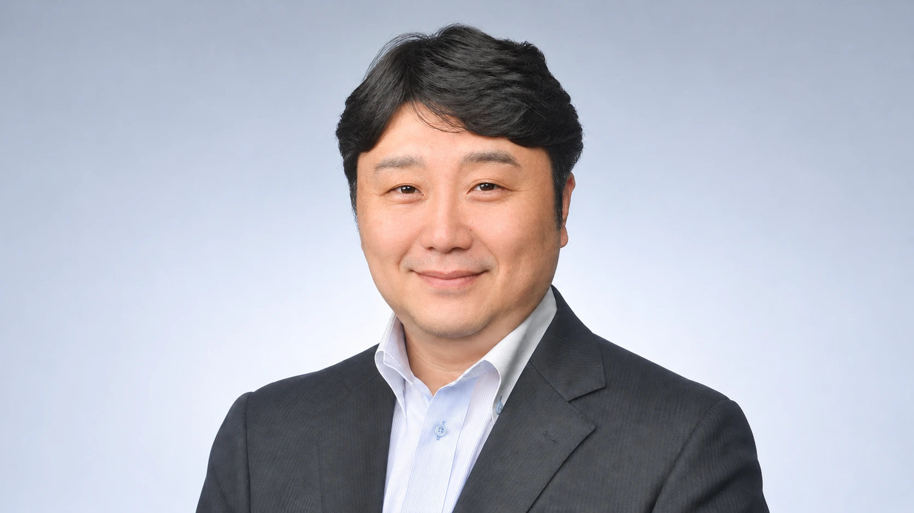
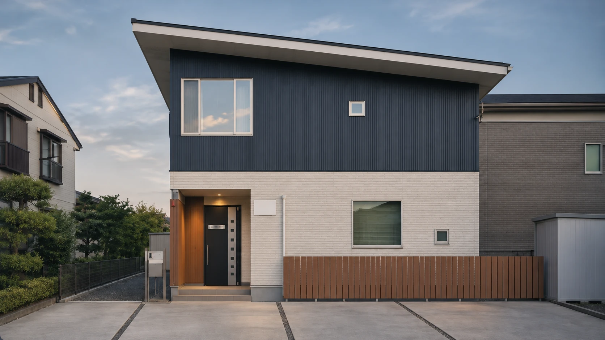

代表・事務所案内

代表のご紹介
横島 正典
関東信越税理士会 土浦支部所属｜税理士登録番号 第109410号
茨城県坂東市（旧岩井市）出身。早稲田大学社会科学部を卒業後、東京都千代田区の会計事務所に約10年間勤務。2007年9月に税理士登録し、地元の坂東市で独立開業しました。2012年4月につくば市へ事務所を移し、法人や個人事業主の税務・会計、創業時の手続き、個人の方の相続税申告や生前対策などを支援しています。
ご相談では、お客様と直接お話しすることを大切にしています。「初めての申告で何から手をつければいいか分からない」「相続に向けて何を準備すればいいか知りたい」。そんなときも、まずは今の状況をお聞かせください。お話を伺いながら、次に何をすればよいか一緒に整理していきます。
これまでの歩み
実務の経験を、
身近な相談の力に。
茨城県坂東市（旧岩井市）に生まれる
早稲田大学社会科学部を卒業
- 大学卒業後
東京都千代田区の会計事務所に約10年間勤務
税理士登録。茨城県坂東市で税理士事務所を開業
事務所を茨城県つくば市へ移転
- 現在
よこしま税理士事務所 代表税理士
事務所情報
よこしま税理士事務所
- 事務所名
- よこしま税理士事務所
- 代表税理士
- 横島 正典関東信越税理士会／登録番号109410号
- 所在地
- 〒305-0041 茨城県つくば市上広岡527-146
- 最寄り駅
- つくばエクスプレス「つくば駅」車で10分
- 電話番号
- 029-875-6970
- FAX番号
- 029-875-6975
- 営業時間
- 平日 9:00〜17:00土曜・日曜・祝日休み
所在地・アクセス
アクセス
よこしま税理士事務所
〒305-0041
茨城県つくば市上広岡527-146
TEL：029-875-6970
FAX：029-875-6975

サービスに関するお問い合わせ
税務・会計のご相談や、業務のご依頼を承っています。
ご状況やお困りごとを、まずはお聞かせください。